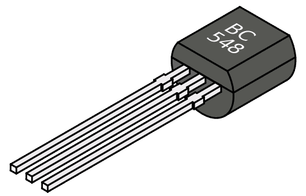

Transistor
En transistor er en elektronisk komponentsom brukes sammen med andre elektroniske
komponenter til å forsterke eller generere signaler, eller som en bryter for å slå på og av signaler eller energitransport. 
CPU
CPU er utførende enhet i en datamaskin.Det leser instruksjoner fra et program som ligger i arbeidslageret på datamaskinen og utfører dem én etter én. CPU har en programteller som inneholder adressen til den instruksjonen som skal utføres, og et antall andre registre.